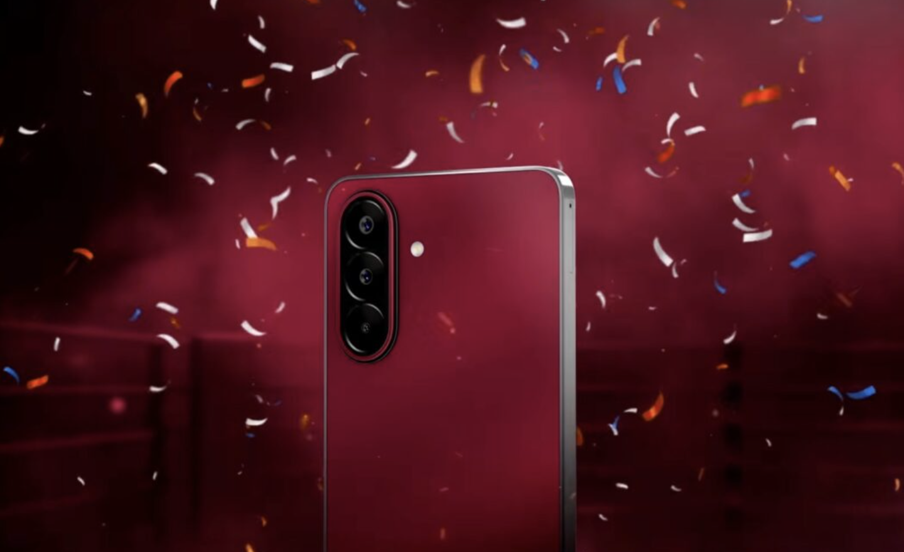

제품 정보
IT홈의 보도에 따르면, SM-E476B 모델의 Samsung 신제품가 GeekBench 벤치마크 데이터베이스에 등장했습니다. 해당 기기는 싱글코어 998점, 멀티코어 3090점을 기록했으며, IT 매체 GSMArena는 이 제품을 Galaxy F70 Pro로 추정하고 있습니다.
성능
벤치마크 결과에 따르면, 해당 기기는 Qualcomm SM6475 칩셋(Snapdragon 6 Gen 3에 해당)을 탑재했습니다. 이 프로세서는 옥타코어 설계를 기반으로 하며, 성능 코어의 최대 클럭은 2.4GHz, 효율 코어는 1.8GHz입니다.
또한, 이 스마트폰은 8GB RAM과 Android 16 운영체제를 탑재할 예정입니다.
디스플레이 및 카메라
Mohammed Khatri의 유출 정보에 따르면, Samsung Galaxy F70 Pro는 6.7인치 FHD+ 120Hz Super AMOLED 패널을 탑재하며, 전면에는 1,200만 화소 셀피 카메라가 포함됩니다.
후면 카메라는 다음과 같이 구성될 예정입니다.
- 5,000만 화소 메인 카메라
- 500만 화소 초광각 카메라
- 200만 화소 매크로 카메라
배터리 및 시스템
해당 기기는 6,000mAh 배터리를 내장하여 45W 유선 충전을 지원하며, OneUI 8.5 시스템을 탑재할 예정입니다.
총평
Samsung Galaxy F70 Pro로 추정되는 SM-E476B 모델은 Snapdragon 6 Gen 3 프로세서와 6,000mAh 대용량 배터리를 탑재할 것으로 보입니다. 또한 고주사율 Super AMOLED 디스플레이와 다양한 카메라 사양을 포함한 최신 시스템이 적용될 예정입니다.
GeekBench 跑分与核心配置
型号为 SM-E476B 的 Samsung Galaxy F70 Pro 近期在 GeekBench 数据库中现身。该机搭载 Qualcomm SM6475（即 Snapdragon 6 Gen 3）芯片，并配备 8GB 内存。
- 单核跑分：998 分
- 多核跑分：3090 分
- 处理器规格：八核设计，性能核最高主频达 2.4GHz，能效核为 1.8GHz
屏幕与影像参数
根据相关爆料，Galaxy F70 Pro 将配备高素质的显示面板及多镜头组合：
- 屏幕：6.7 英寸 FHD+ 120Hz Super AMOLED 面板
- 前置摄像头：1200 万像素
- 后置主摄：5000 万像素
- 后置超广角：500 万像素
- 后置微距镜头：200 万像素
电池与系统规格
该机在续航能力和软件支持方面提供以下参数：
- 电池容量：6000mAh
- 充电功率：支持 45W 有线充电
- 操作系统：Android 16 系统，搭载 OneUI 8.5 界面
总结
Samsung Galaxy F70 Pro (SM-E476B) 已在跑分数据库中曝光，确认搭载 Snapdragon 6 Gen 3 处理器及 8GB 内存。该机配备了 6.7 英寸高刷 AMOLED 屏、6000mAh 大电池以及 45W 快充功能。
製品情報
ITホームの報道によると、Samsungの新型モデル「SM-E476B」がGeekBenchのベンチマークデータベースに登場しました。このデバイスはシングルコア998点、マルチコア3,090点を記録しており、ITメディアのGSMArenaはこの製品をGalaxy F70 Proと推測しています。
性能
ベンチマークの結果から、このデバイスにはQualcomm SM6475チップセット（Snapdragon 6 Gen 3に相当）が搭載されていることが判明しました。このプロセッサはオクタコア設計をベースとしており、パフォーマンスコアの最大クロックは2.4GHz、エフィシェンシーコアは1.8GHzです。
また、このスマートフォンは8GB RAMとAndroid 16を搭載する予定です。
ディスプレイとカメラ
Mohammed Khatri氏のリーク情報によると、Samsung Galaxy F70 Proは6.7インチFHD+ 120Hz Super AMOLEDパネルを搭載し、前面には1,200万画素のセルフィーカメラを搭載します。
背面カメラの構成は以下の通りです。
- 5,000万画素メインカメラ
- 500万画素超広角カメラ
- 200万画素マクロカメラ
バッテリーとシステム
このデバイスは6,000mAhのバッテリーを内蔵し、45Wの有線充電をサポートします。また、OneUI 8.5システムを搭載する予定です。
総評
Samsung Galaxy F70 Proと推測されるSM-E476Bモデルは、Snapdragon 6 Gen 3プロセッサと6,000mAhの大容量バッテリーを搭載する見込みです。さらに、高リフレッシュレートのSuper AMOLEDディスプレイや多彩なカメラ構成を含む最新システムが採用される予定です。
まとめ
Samsung Galaxy F70 Pro（SM-E476B）は、Snapdragon 6 Gen 3プロセッサと6,000mAhの大容量バッテリーを搭載する次世代モデルとして注目されています。120HzのSuper AMOLEDディスプレイや最新のOneUIシステムなど、充実したスペックを備える見込みです。
Product Information
According to reports from IT Home, the SM-E476B model has appeared in the GeekBench benchmark database. The device recorded a single-core score of 998 and a multi-core score of 3090. The media outlet GSMArena identifies this device as the Galaxy F70 Pro.
Performance
Benchmark results indicate that the device is equipped with the Qualcomm SM6475 chipset (equivalent to the Snapdragon 6 Gen 3). This processor features an octa-core design, with performance cores reaching up to 2.4GHz and efficiency cores at 1.8GHz.
Additionally, this smartphone is expected to feature 8GB of RAM and run on the Android 16 operating system.
Display and Camera
According to leaks from Mohammed Khatri, the Samsung Galaxy F70 Pro will feature a 6.7-inch FHD+ 120Hz Super AMOLED panel, with a 12-megapixel selfie camera on the front.
The rear camera system is expected to consist of the following:
- 50MP main camera
- 5MP ultra-wide camera
- 2MP macro camera
Battery and System
The device features a 6,000mAh battery supporting 45W wired charging and is expected to run on the OneUI 8.5 system.
Summary
The SM-E476B model, presumed to be the Samsung Galaxy F70 Pro, is expected to feature a Snapdragon 6 Gen 3 processor and a high-capacity 6,000mAh battery. It will also include a high-refresh-rate Super AMOLED display and a versatile camera setup running on the OneUI 8.5 system.
